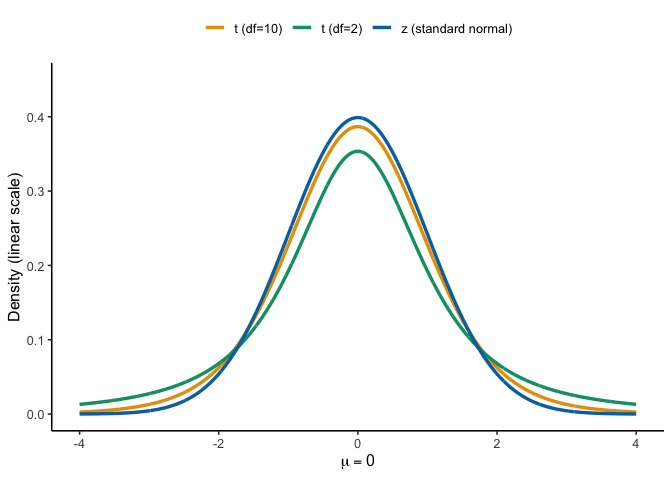
7 t-tests
7.1 Intro
In the early 1900s, William Sealy Gosset joined Guinness, then the world’s largest brewery. Guinness hired scientifically trained brewers and gave them latitude to pursue research that improved the product. As production scaled, quality control mattered: a pint should taste the same in Dublin as in Detroit. Until then, hop quality was judged mostly by appearance and smell, which was unreliable. Chemical assays could measure ingredients, but the core problem was statistical. Inference relied on the normal (Z) distribution, which works well when samples are large enough for a normal approximation. In practice, Guinness could not destroy large volumes of beer or ingredients just to test them.
Gosset set out to quantify the extra uncertainty introduced by small samples. How much wider is the error around an estimate when \(n=10\) instead of \(n=1000\)? He derived a new sampling distribution that accounts for small-sample variability, now known as the Student’s (t) distribution. Because Guinness restricted external publications, he published the 1908 paper under the pseudonym “Student” (Student 1908). That is why we still say Student’s \(t\)-test. The core idea you will use today is the same: measure a signal, scale it by its standard error, and compare the resulting \(t\) to the appropriate \(t\) distribution for your \(n-1\) degrees of freedom.
Why this matters. We often compare a sample mean to a reference (drinking-water standard, historical average) or compare two conditions (before/after, site A vs site B). A t-test asks whether the observed difference is larger than you would expect from sampling variation alone, given your \(n\) and variability.
Three common t-tests you will use.
- One-sample t-test. Compare a sample mean to a target (\(\mu_0\)).
- Paired t-test. Compare before/after (or matched) measurements on the same units by running a one-sample t on the differences.
- Independent-samples t-test (also called two-sample t-test) Compare means from two groups measured on different units. Use Welch’s test by default when variances differ.
What you will report.
Always report:
- the effect size (mean difference)
- a 95% CI, the test statistic with df
- and the \(p\)-value.
Example: “Mean change was (-0.42) units (95% CI [-0.73,-0.11] ;t(11)=-2.92; p=0.014).”
7.2 From mean & SD to “signal over noise”
A mean tells you where the center is; the SD tells you how spread out the data are. A mean of 50 could be very representative (if SD is tiny) or nearly meaningless (if SD is huge). You need both.
A simple way to combine them is a ratio:
\[ \frac{\text{mean}}{\text{SD}} \]
Big numerator, small denominator → big ratio (more confidence that the mean reflects the data).
Small numerator or big denominator → small ratio (less confidence).
For instance, mean = 50 with SD = 1 gives 50; mean = 50 with SD = 100 gives 0.5. Same mean, very different stories.
This “signal over noise” pattern shows up everywhere in inference. In general,
\[ \text{statistic}=\frac{\text{effect}}{\text{error}}. \]
For \(t\)-tests, we won’t actually use SD in the denominator, we use the standard error \(SE\), which is the SD of the sample mean. But the logic is the same: measure a signal, scale it by its uncertainty, and see whether the resulting ratio is unusually large or small under the right \(t\) distribution.
\[ t = \frac{\text{effect}}{\text{standard error}} = \frac{\bar{X} - \mu_0}{s / \sqrt{n}} \]
We now turn that ratio into a test statistic for a single mean.
7.3 One-sample t-test
Use a one-sample \(t\) when you want to test whether a sample mean differs from a reference value (\(\mu_0\)). The question: is the observed difference bigger than you’d expect from sampling variability, given \(n\) and your sample SD \(s\)?
\[ t = \frac{\bar{X}-\mu_0}{s/\sqrt{n}}, \qquad df = n-1 \]
After calculating \(t\) from our data, we compare the observed \(t\) to a \(t\) distribution with \(n-1\) degrees of freedom to get a \(p\)-value and a decision at \(\alpha\).
7.3.1 Comparing \(z\) and \(t\)
When the population SD is known (or we have a large enough sample to assume convergence), the ratio is called \(z\); when it’s estimated from the data, it’s \(t\).”
Under a known population SD (\(\sigma\)), the standardized mean uses the \(z\) statistic: \[ z = \frac{\bar{X}-\mu_0}{\sigma/\sqrt{n}} \]
When \(\sigma\) is unknown (the usual case), we estimate it with the sample SD (\(s\)) and use the \(t\) statistic: \[ t = \frac{\bar{X}-\mu_0}{s/\sqrt{n}}, \qquad df = n-1 \]
Because \(s\) varies from sample to sample, the \(t\) distribution has heavier tails than the standard normal. As \(n\) grows, \(s\) stabilizes and \(t\) converges to \(z\).
Note
When is \(z\) appropriate? If the population SD \(\sigma\) is known and the sampling distribution of the mean is (approximately) normal, use \(z\). In practice, \(\sigma\) is rarely known, so we use \(t\) with \(s\) and \(df=n-1\).
Rule of thumb. For two-tailed tests at \(\alpha=0.05\):
- \(z\) uses critical values \(\pm 1.96\).
- \(t\) is a bit wider for small \(n\) (e.g., \(df=9 \Rightarrow \pm 2.262\); \(df=29 \Rightarrow \pm 2.045\)), and approaches \(\pm 1.96\) as \(n\) increases.
7.3.2 What t represents
Either way, the ratio asks the same question: how far is the mean from the reference in SE units?
\(t\) expresses how far a sample mean is from the hypothesized mean, in standard error units (signal over noise):
\[ t = \frac{\bar{X}-\mu_0}{s/\sqrt{n}} \]
\(t\) can be positive or negative depending on direction. Under \(H_0\), \(t \sim t_{(df=n-1)}\).
Rule of thumb: at \(\alpha=.05\) two-tailed, \(|t|\gtrsim 2\) is uncommon when \(df\approx 20\).
Note
Remember, \(s/\sqrt{n}\) is the standard error (SE)—the standard deviation of the sampling distribution of the mean.
Let’s see how \(t\) values behave when samples really come from the null hypothesis. Under the null hypothesis, \(t\) follows a \(t\) distribution with \(df = n-1\).
Large \(|t|\) values are rare; with \(df \approx 20\), \(|t| \gtrsim 2\) is uncommon at \(\alpha = .05\) (two-tailed).
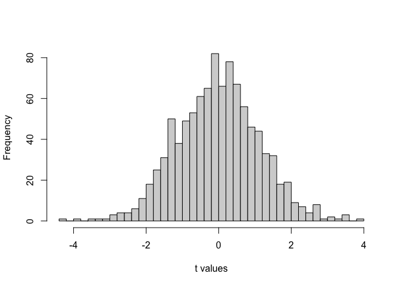
Takeaway: \(t\) measures how far the sample mean is from the null expectation, scaled by its uncertainty. It behaves predictably under \(H_0\), allowing us to decide whether a difference is likely due to chance.
7.3.3 Calculating t from data
Let’s calculate a one-sample \(t\) statistic step by step using a short example. Ten students each took a 5-question true/false quiz (50% expected by chance). Their scores (percent correct) are:
Scores: (50, 70, 60, 40, 80, 30, 90, 60, 70, 60)
#> [1] 61
#> [1] 17.91957
#> [1] 5.666667
#> t
#> 1.941176
#> df
#> 9
#> [1] 0.08415031
#> [1] 48.18111 73.81889
#> attr(,"conf.level")
#> [1] 0.95
#> mean of x
#> 61Results (R): \(t(9)=1.94\), \(p=0.0842\); mean \(=61\) (95% CI(48.18,73.82)).
Interpretation: The mean (61%) is above chance (50%), but not statistically significant at \(\alpha=.05\).
Assumptions check: Independence of observations; approximate normality of the outcome (with \(n=10\), mild deviations are acceptable for a one-sample \(t\)).
We can confirm this with a single R command:
t.test(scores, mu = 5
The standard error of the mean, is the standard deviation divided by the square root of \(n\)
\(\text{SEM} = \frac{s}{\sqrt{n}} = \frac{17.92}{10} = 5.67\)
\(t\) is the difference between our sample mean (61), and our population mean (50, assuming chance), divided by the standard error of the mean.
\(\text{t} = \frac{\bar{X}-u}{S_{\bar{X}}} = \frac{\bar{X}-u}{SEM} = \frac{61-50}{5.67} = 1.94\)
Interpretation: The sample mean (61%) is higher than chance (50%), but the difference is not large enough to be statistically significant at \(\alpha = 0.05\).
Assumptions check: Observations are independent, and with \(n=10\) the data are approximately normal—sufficient for a one-sample \(t\) test.
7.3.4 How does t behave?
Under the null hypothesis (\(H_0\) true), \(t\) follows a t distribution with degrees of freedom \(df = n - 1\). Large \(|t|\) values are rare—extreme sample means are unlikely if \(H_0\) is true.
For moderate sample sizes (\(df \approx 20\)), a simple rule of thumb is:
In a two-tailed test at \(\alpha = .05\), \(|t| \gtrsim 2\) is uncommon.
This means values of \(t\) beyond roughly \(-2\) or \(+2\) occur less than 5% of the time under the null. That’s the foundation of the decision rule for \(t\) tests: if your observed \(t\) lies in those rare tails, you reject \(H_0\).
Remember, if we obtained a single \(t\) from one sample we collected, we could consult the chance window in Figure 7.3 below to find out whether the \(t\) we obtained from the sample was likely or unlikely to occur by chance.
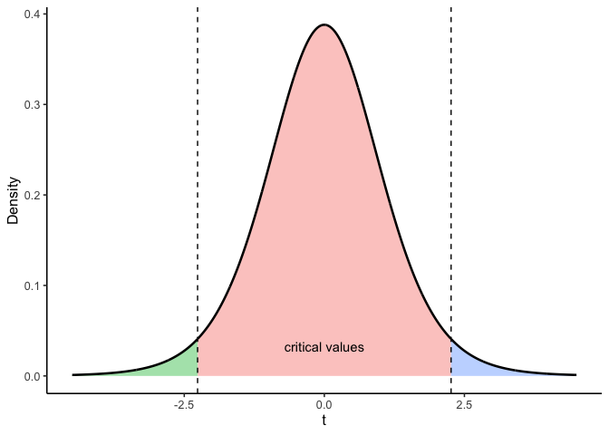
7.4 Paired t: before/after or matched
When the same units are measured twice (before/after, matched pairs), the question is whether they changed. The natural data unit is the within-unit difference.
Design in this worked example. Ecologists measured soil moisture (%) at 20 paired field plots before and after wetland restoration. Each plot was measured twice — once during the dry season before restoration work began, and again one year later. We care whether restoration increased soil moisture, which would support plant reestablishment and carbon sequestration.
Define differences and their meaning. Choose an order and stick to it:
- \(d_i = \text{After}_i - \text{Before}_i\)
- \(d_i>0\): plot had more soil moisture after restoration (increase)
- \(d_i<0\): plot had less soil moisture after restoration (decrease)
This subtraction cancels between-plot variability (some plots are naturally wetter than others) and focuses on within-plot change.
Test on differences (paired (t)). Compute one difference per plot, then run a one-sample \(t\) against 0:
\[ \bar d=\frac{1}{n}\sum_{i=1}^n d_i, \quad s_d=\text{SD}(d_1,\ldots,d_n), \quad t = \frac{\bar d - 0}{s_d/\sqrt{n}}, \quad df=n-1. \]
The sign of (t) matches (d) and your difference direction.
Mini walk-through (first 5 plots). Using five representative plots, suppose \(\bar d = 2.8\) and \(s_d = 3.35\). Then \[ t=\frac{2.8}{3.35/\sqrt{5}} \approx 1.87,\qquad df=4, \] which (two-tailed) is not significant. That’s expected with \(n=5\).
Full sample effect. With all 20 plots, \(\bar d\) is similar but \(s_d/\sqrt{n}\) gets smaller, so \(t\) increases and the result becomes significant. This is the payoff of pairing: more power from the same number of plots.
What to report. (d) (the mean change), a 95% CI, (t(df)), and (p). Optionally add a standardized effect (Cohen’s (d=d/s_d)).
R pointers (you’ll do this in lab).
- Compute differences:
d <- after - before - Paired \(t\):
t.test(d, mu = 0)ort.test(after, before, paired = TRUE) - CI for \(\bar d\): from the
t.testoutput
7.4.1 Calculate t
OK, so how do we calculate \(t\) for a paired-samples \(t\)-test? Surprise, we use the one-sample t-test formula that you already learned about! Specifically, we use the one-sample \(t\)-test formula on the difference scores. We have one sample of difference scores (you can see they are in one column), so we can use the one-sample \(t\)-test on the difference scores. Specifically, we are interested in comparing whether the mean of our difference scores came from a distribution with mean difference = 0. This is a special distribution we refer to as the null distribution. It is the distribution no differences. Of course, this null distribution can produce differences due to to sampling error, but those differences are not caused by any experimental manipulation, they caused by the random sampling process.
We calculate \(t\) in a moment. Let’s now consider again why we want to calculate \(t\)? Why don’t we just stick with the mean difference we already have?
Remember, the whole concept behind \(t\), is that it gives an indication of how confident we should be in our mean. Remember, \(t\) involves a measure of the mean in the numerator, divided by a measure of variation (standard error of the sample mean) in the denominator. The resulting \(t\) value is small when the mean difference is small, or when the variation is large. So small \(t\)-values tell us that we shouldn’t be that confident in the estimate of our mean difference. Large \(t\)-values occur when the mean difference is large and/or when the measure of variation is small. So, large \(t\)-values tell us that we can be more confident in the estimate of our mean difference. Let’s find \(t\) for the mean difference scores. We use the same formulas as we did last time:
| plot | Before | After | differences | diff_from_mean | Squared_differences |
|---|---|---|---|---|---|
| 1 | 18 | 21 | 3 | 0.2 | 0.0400000000000001 |
| 2 | 22 | 26 | 4 | 1.2 | 1.44 |
| 3 | 16 | 22 | 6 | 3.2 | 10.24 |
| 4 | 25 | 29 | 4 | 1.2 | 1.44 |
| 5 | 21 | 18 | -3 | -5.8 | 33.64 |
| Sums | 102 | 116 | 14 | 0 | 46.8 |
| Means | 20.4 | 23.2 | 2.8 | 0 | 9.36 |
| sd | 3.421 | ||||
| SEM | 1.53 | ||||
| t | 1.83006535947712 |
If we did this test using R, we would obtain almost the same numbers (there is a little bit of rounding in the table).
#>
#> One Sample t-test
#>
#> data: differences
#> t = 1.8304, df = 4, p-value = 0.1412
#> alternative hypothesis: true mean is not equal to 0
#> 95 percent confidence interval:
#> -1.447144 7.047144
#> sample estimates:
#> mean of x
#> 2.8Here is a quick write up of our t-test results, t(4) = 1.87, p = .135.
What does all of that tell us? There’s a few things we haven’t gotten into much yet. For example, the 4 represents degrees of freedom, which we discuss later. The important part, the \(t\) value should start to be a little bit more meaningful. We got a modest t-value of 1.87. What can we tell from this value? First, it is positive, so we know the mean difference is positive — soil moisture increased after restoration on average. The sign of the \(t\)-value is always the same as the sign of the mean difference (ours was +2.8 percentage points). We can also see that the p-value was .135. We’ve seen p-values before. This tells us our \(t\) value or larger would occur about 13.5% of the time by chance alone… Actually it means more than this. And, to understand it, we need to talk about the concept of two-tailed and one-tailed tests.
7.4.2 Interpreting \(t\)s
Remember what it is we are doing here. We are evaluating whether our sample data could have come from a particular kind of distribution. The null distribution of no differences. This is the distribution of \(t\)-values that would occur for samples of size 5, with a mean difference of 0, and a standard error of the sample mean of .075 (this is the SEM that we calculated from our sample). We can see what this particular null-distribution looks like in Figure 7.4.
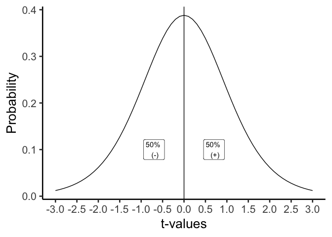
The \(t\)-distribution above shows us the kinds of values \(t\) will will take by chance alone, when we measure the mean differences for pairs of 5 samples (like our current). \(t\) is most likely to be zero, which is good, because we are looking at the distribution of no-differences, which should most often be 0! But, sometimes, due to sampling error, we can get \(t\)s that are bigger than 0, either in the positive or negative direction. Notice the distribution is symmetrical, a \(t\) from the null-distribution will be positive half of the time, and negative half of the time, that is what we would expect by chance.
So, what kind of information do we want know when we find a particular \(t\) value from our sample? We want to know how likely the \(t\) value like the one we found occurs just by chance. This is actually a subtly nuanced kind of question. For example, any particular \(t\) value doesn’t have a specific probability of occurring. When we talk about probabilities, we are talking about ranges of probabilities. Let’s consider some probabilities. We will use the letter \(p\), to talk about the probabilities of particular \(t\) values.
What is the probability that \(t\) is zero or positive or negative? The answer is p=1, or 100%. We will always have a \(t\) value that is zero or non-zero…Actually, if we can’t compute the t-value, for example when the standard deviation is undefined, I guess then we would have a non-number. But, assuming we can calculate \(t\), then it will always be 0 or positive or negative.
What is the probability of \(t\) = 0 or greater than 0? The answer is p=.5, or 50%. 50% of \(t\)-values are 0 or greater.
What is the of \(t\) = 0 or smaller than 0? The answer is p=.5, or 50%. 50% of \(t\)-values are 0 or smaller.
We can answer all of those questions just by looking at our t-distribution, and dividing it into two equal regions, the left side (containing 50% of the \(t\) values), and the right side containing 50% of the \(t\)-values).
What if we wanted to take a more fine-grained approach, let’s say we were interested in regions of 10%. What kinds of \(t\)s occur 10% of the time. We would apply lines like the following. Notice, the likelihood of bigger numbers (positive or negative) gets smaller, so we have to increase the width of the bars for each of the intervals between the bars to contain 10% of the \(t\)-values, it looks like Figure 7.5.
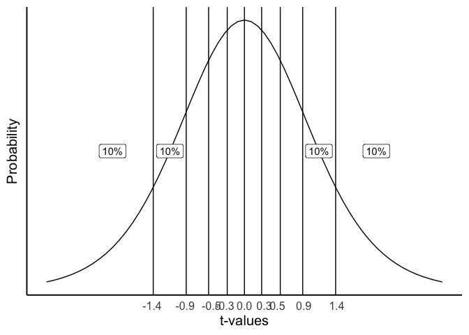
Consider the probabilities (\(p\)) of \(t\) for the different ranges.
- \(t\) <= -1.5 (\(t\) is less than or equal to -1.5), \(p\) = 10%
- -1.5 >= \(t\) <= -0.9 (\(t\) is equal to or between -1.5 and -.9), \(p\) = 10%
- -.9 >= \(t\) <= -0.6 (\(t\) is equal to or between -.9 and -.6), \(p\) = 10%
- \(t\) >= 1.5 (\(t\) is greater than or equal to 1.5), \(p\) = 10%
Notice, that the \(p\)s are always 10%. \(t\)s occur in these ranges with 10% probability.
7.4.3 Getting the p-values for \(t\)-values
You might be wondering where I am getting some of these values from. For example, how do I know that 10% of \(t\) values (for this null distribution) have a value of approximately 1.5 or greater than 1.5? The answer is I used R to tell me.
In most statistics textbooks the answer would be: there is a table at the back of the book where you can look these things up…This textbook has no such table. We could make one for you. And, we might do that. But, we didn’t do that yet…
So, where do these values come from, how can you figure out what they are? The complicated answer is that we are not going to explain the math behind finding these values because, 1) the authors (some of us) admittedly don’t know the math well enough to explain it, and 2) it would sidetrack us to much, 3) you will learn how to get these numbers in the lab with software, 4) you will learn how to get these numbers in lab without the math, just by doing a simulation, and 5) you can do it in R, or excel, or you can use an online calculator.
This is all to say that you can find the \(t\)s and their associated \(p\)s using software. But, the software won’t tell you what these values mean. That’s we are doing here. You will also see that software wants to know a few more things from you, such as the degrees of freedom for the test, and whether the test is one-tailed or two tailed. We haven’t explained any of these things yet. That’s what we are going to do now. Note, we explain degrees of freedom last. First, we start with a one-tailed test.
7.4.4 One-tailed tests
A one-tailed test is sometimes also called a directional test. It is called a directional test, because a researcher might have a hypothesis in mind suggesting that the difference they observe in their means is going to have a particular direction, either a positive difference, or a negative difference.
Typically, a researcher would set an alpha criterion. The alpha criterion describes a line in the sand for the researcher. Often, the alpha criterion is set at \(p = .05\). What does this mean? Figure 7.6 shows the \(t\)-distribution and the alpha criterion.
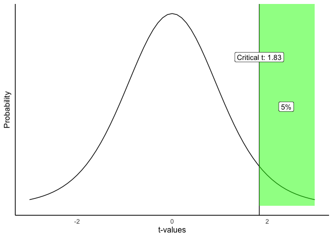
The figure shows that \(t\) values of +2.13 or greater occur 5% of the time. Because the t-distribution is symmetrical, we also know that \(t\) values of -2.13 or smaller also occur 5% of the time. Both of these properties are true under the null distribution of no differences. This means, that when there really are no differences, a researcher can expect to find \(t\) values of 2.13 or larger 5% of the time.
Let’s review and connect some of the terms:
alpha criterion: the criterion set by the researcher to make decisions about whether they believe chance did or did not cause the difference. The alpha criterion here is set to \(p = .05\).
Critical \(t\). The critical \(t\) is the \(t\)-value associated with the alpha-criterion. In this case for a one-tailed test, it is the \(t\) value where 5% of all \(t\)s are this number or greater. In our example, the critical \(t\) is 2.13. 5% of all \(t\) values (with degrees of freedom = 4) are +2.13, or greater than +2.13.
Observed \(t\). The observed \(t\) is the one that you calculated from your sample. In our restoration example with 5 plots, the observed \(t\) was \(t\)(4) = 1.87.
p-value. The \(p\)-value is the probability of obtaining the observed \(t\) value or larger. Now, you could look back at our previous example, and find that the \(p\)-value for \(t\)(4) = 1.87, was \(p = .135\). HOWEVER, this p-value was not calculated for a one-directional test…(we talk about what .135 means in the next section).
Figure 7.7 shows what the \(p\)-value for \(t\) (4) = .72 using a one-directional test would would look like:
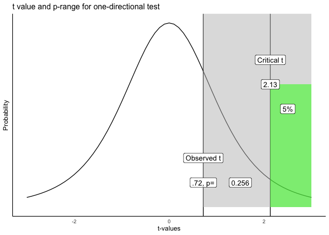
Let’s take this one step at a time. We have located the observed \(t\) of .72 on the graph. We shaded the right region all grey. What we see is that the grey region represents .256 or 25.6% of all \(t\) values. In other words, 25.6% of \(t\) values are .72 or larger than .72. You could expect, by chance alone, to a find a \(t\) value of .72 or larger, 25.6% of the time. That’s fairly often. We did find a \(t\) value of .72. Now that you know this kind of \(t\) value or larger occurs 25.6% of the time, would you be confident that the mean difference was not due to chance? Probably not, given that chance can produce this difference fairly often.
Following the “standard” decision making procedure, we would claim that our \(t\) value was not statistically significant, because it was not large enough. If our observed value was larger than the critical \(t\) (larger than 2.13), defined by our alpha criterion, then we would claim that our \(t\) value was statistically significant. This would be equivalent to saying that we believe it is unlikely that the difference we observed was due to chance. In general, for any observed \(t\) value, the associated \(p\)-value tells you how likely a \(t\) of the observed size or larger would be observed. The \(p\)-value always refers to a range of \(t\)-values, never to a single \(t\)-value. Researchers use the alpha criterion of .05, as a matter of convenience and convention. There are other ways to interpret these values that do not rely on a strict (significant versus not) dichotomy.
7.4.5 Two-tailed tests
OK, so that was one-tailed tests… What are two tailed tests? The \(p\)-value that we originally calculated from our paired-samples \(t\)-test was for a 2-tailed test. Often, the default is that the \(p\)-value is for a two-tailed test.
The two-tailed test, is asking a more general question about whether a difference is likely to have been produced by chance. The question is: what is probability of any difference. It is also called a non-directional test, because here we don’t care about the direction or sign of the difference (positive or negative), we just care if there is any kind of difference.
The same basic things as before are involved. We define an alpha criterion (\(\alpha = 0.05\)). And, we say that any observed \(t\) value that has a probability of \(p\) <.05 (\(p\) is less than .05) will be called statistically significant, and ones that are more likely (\(p\) >.05, \(p\) is greater than .05) will be called null-results, or not statistically significant. The only difference is how we draw the alpha range. Before it was on the right side of the \(t\) distribution (we were conducting a one-sided test remember, so we were only interested in one side).
Figure 7.8 shows what the most extreme 5% of the \(t\)-values are when we ignore their sign (whether they are positive or negative).
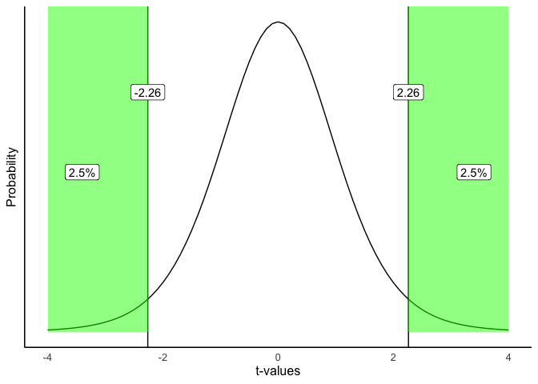
Here is what we are seeing. A distribution of no differences (the null, which is what we are looking at), will produce \(t\)s that are 2.78 or greater 2.5% of the time, and \(t\)s that are -2.78 or smaller 2.5% of the time. 2.5% + 2.5% is a total of 5% of the time. We could also say that \(t\)s larger than +/- 2.78 occur 5% of the time.
As a result, the critical \(t\) value is (+/-) 2.78 for a two-tailed test. As you can see, the two-tailed test is blind to the direction or sign of the difference. Because of this, the critical \(t\) value is also higher for a two-tailed test, than for the one-tailed test that we did earlier. Hopefully, now you can see why it is called a two-tailed test. There are two tails of the distribution, one on the left and right, both shaded in green.
7.4.6 One or two tailed, which one?
Now that you know there are two kinds of tests, one-tailed, and two-tailed, which one should you use? There is some conventional wisdom on this, but also some debate. In the end, it is up to you to be able to justify your choice and why it is appropriate for you data. That is the real answer.
The conventional answer is that you use a one-tailed test when you have a theory or hypothesis that is making a directional prediction (the theory predicts that the difference will be positive, or negative). Similarly, use a two-tailed test when you are looking for any difference, and you don’t have a theory that makes a directional prediction (it just makes the prediction that there will be a difference, either positive or negative).
Also, people appear to choose one or two-tailed tests based on how risky they are as researchers. If you always ran one-tailed tests, your critical \(t\) values for your set alpha criterion would always be smaller than the critical \(t\)s for a two-tailed test. Over the long run, you would make more type I errors, because the criterion to detect an effect is a lower bar for one than two tailed tests.
Remember type 1 errors occur when you reject the idea that chance could have caused your difference. You often never know when you make this error. It happens anytime that sampling error was the actual cause of the difference, but a researcher dismisses that possibility and concludes that their manipulation caused the difference.
Similarly, if you always ran two-tailed tests, even when you had a directional prediction, you would make fewer type I errors over the long run, because the \(t\) for a two-tailed test is higher than the \(t\) for a one-tailed test. It seems quite common for researchers to use a more conservative two-tailed test, even when they are making a directional prediction based on theory. In practice, researchers tend to adopt a standard for reporting that is common in their field. Whether or not the practice is justifiable can sometimes be an open question. The important task for any researcher, or student learning statistics, is to be able to justify their choice of test.
7.4.7 Degrees of freedom
Before we finish up with paired-samples \(t\)-tests, we should talk about degrees of freedom. Our sense is that students don’t really understand degrees of freedom very well. If you are reading this textbook, you are probably still wondering what is degrees of freedom, seeing as we haven’t really talked about it all.
For the \(t\)-test, there is a formula for degrees of freedom. For the one-sample and paired sample \(t\)-tests, the formula is:
\(\text{Degrees of Freedom} = \text{df} = n-1\). Where n is the number of samples in the test.
In our paired \(t\)-test example, there were 5 restoration plots. Therefore, degrees of freedom = 5-1 = 4.
OK, that’s a formula. Who cares about degrees of freedom, what does the number mean? And why do we report it when we report a \(t\)-test… you’ve probably noticed the number in parentheses e.g., \(t\)(4)=.72, the 4 is the \(df\), or degrees of freedom.
Degrees of freedom is both a concept, and a correction. The concept is that if you estimate a property of the numbers, and you use this estimate, you will be forcing some constraints on your numbers.
Consider the numbers: 1, 2, 3. The mean of these numbers is 2. Now, let’s say I told you that the mean of three numbers is 2. Then, how many of these three numbers have freedom? Funny question right. What we mean is, how many of the three numbers could be any number, or have the freedom to be any number.
The first two numbers could be any number. But, once those two numbers are set, the final number (the third number), MUST be a particular number that makes the mean 2. The first two numbers have freedom. The third number has no freedom.
To illustrate. Let’s freely pick two numbers: 51 and -3. I used my personal freedom to pick those two numbers. Now, if our three numbers are 51, -3, and x, and the mean of these three numbers is 2. There is only one solution, x has to be -42, otherwise the mean won’t be 2. This is one way to think about degrees of freedom. The degrees of freedom for these three numbers is n-1 = 3-1= 2, because 2 of the numbers can be free, but the last number has no freedom, it becomes fixed after the first two are decided.
Now, statisticians often apply degrees of freedom to their calculations, especially when a second calculation relies on an estimated value. For example, when we calculate the standard deviation of a sample, we first calculate the mean of the sample right! By estimating the mean, we are fixing an aspect of our sample, and so, our sample now has n-1 degrees of freedom when we calculate the standard deviation (remember for the sample standard deviation, we divide by n-1…there’s that n-1 again.)
7.4.7.1 Simulating how degrees of freedom affects the \(t\) distribution
There are at least two ways to think the degrees of freedom for a \(t\)-test. For example, if you want to use math to compute aspects of the \(t\) distribution, then you need the degrees of freedom to plug in to the formula… If you want to see the formulas I’m talking about, scroll down on the \(t\)-test wikipedia page and look for the probability density or cumulative distribution functions…We think that is quite scary for most people, and one reason why degrees of freedom are not well-understood.
If we wanted to simulate the \(t\) distribution we could more easily see what influence degrees of freedom has on the shape of the distribution. Remember, \(t\) is a sample statistic, it is something we measure from the sample. So, we could simulate the process of measuring \(t\) from many different samples, then plot the histogram of \(t\) to show us the simulated \(t\) distribution.
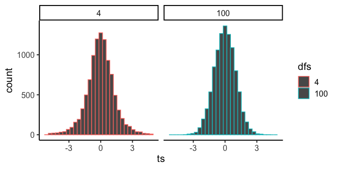
In Figure 7.9 notice that the red distribution for \(df = 4\), is a little bit shorter, and a little bit wider than the bluey-green distribution for \(df = 100\). As degrees of freedom increase the \(t\) distribution gets taller (in the middle), and narrower in the range. It get’s more peaky. Can you guess the reason for this? Remember, we are estimating a sample statistic, and degrees of freedom is really just a number that refers to the number of subjects (well minus one). And, we already know that as we increase \(n\), our sample statistics become better estimates (less variance) of the distributional parameters they are estimating. So, \(t\) becomes a better estimate of it’s “true” value as sample size increase, resulting in a more narrow distribution of \(t\)s.
There is a slightly different \(t\) distribution for every degrees of freedom, and the critical regions associated with 5% of the extreme values are thus slightly different every time. This is why we report the degrees of freedom for each t-test, they define the distribution of \(t\) values for the sample-size in question. Why do we use n-1 and not n? Well, we calculate \(t\) using the sample standard deviation to estimate the standard error or the mean, that estimate uses n-1 in the denominator, so our \(t\) distribution is built assuming n-1. That’s enough for degrees of freedom…
7.5 The paired samples t-test strikes back
Don’t worry, we’re not starting over — we’re just going to 1) remind you of the soil moisture restoration example, and 2) run the paired t-test on the full dataset of 20 plots and discuss what changes.
Remember, we were asking whether soil moisture (%) increased after wetland restoration. We showed you data from 5 plots and walked through the computations for the \(t\)-test. As a reminder, it looked like this:
| plot | Before | After | differences | diff_from_mean | Squared_differences |
|---|---|---|---|---|---|
| 1 | 18 | 21 | 3 | 0.2 | 0.0400000000000001 |
| 2 | 22 | 26 | 4 | 1.2 | 1.44 |
| 3 | 16 | 22 | 6 | 3.2 | 10.24 |
| 4 | 25 | 29 | 4 | 1.2 | 1.44 |
| 5 | 21 | 18 | -3 | -5.8 | 33.64 |
| Sums | 102 | 116 | 14 | 0 | 46.8 |
| Means | 20.4 | 23.2 | 2.8 | 0 | 9.36 |
| sd | 3.421 | ||||
| SEM | 1.53 | ||||
| t | 1.83006535947712 |
#>
#> One Sample t-test
#>
#> data: differences
#> t = 1.8304, df = 4, p-value = 0.1412
#> alternative hypothesis: true mean is not equal to 0
#> 95 percent confidence interval:
#> -1.447144 7.047144
#> sample estimates:
#> mean of x
#> 2.8Let’s write down the finding one more time: The mean difference was 2.8 percentage points, \(t\)(4) = 1.87, \(p\) = .135. We can also now confirm that the \(p\)-value was from a two-tailed test. So, what does this all really mean?
We can say that a \(t\) value with an absolute value of 1.87 or larger occurs 13.5% of the time by chance alone. More precisely, the null distribution of no differences will produce a \(t\) value this large or larger 13.5% of the time. In other words, our five-plot sample is too small to rule out chance as an explanation for the observed increase.
Let’s now run the test using all 20 plots.
#>
#> One Sample t-test
#>
#> data: differences_full
#> t = 3.3943, df = 19, p-value = 0.003044
#> alternative hypothesis: true mean is not equal to 0
#> 95 percent confidence interval:
#> 1.629317 6.870683
#> sample estimates:
#> mean of x
#> 4.25Now we get a very different answer. The degrees of freedom is 19, confirming \(n = 20\) plots. We see a much smaller \(p\)-value. This is also a two-tailed test. In other words, the null distribution of no differences will produce the observed \(t\)-value very rarely. So, it is unlikely that the observed mean increase in soil moisture was due to chance alone. As a result, we can be reasonably confident that wetland restoration increased soil moisture at these sites — consistent with the ecological goal of restoring hydrological function.
7.6 Two independent groups
If you’ve been following the Star Wars references, we are on last movie (of the original trilogy)… the independent t-test. This is were basically the same story plays out as before, only slightly different.
Remember there are different \(t\)-tests for different kinds of research designs. When your design is a between-subjects design, you use an independent samples t-test. Between-subjects design involve different people or subjects in each experimental condition. If there are two conditions, and 10 people in each, then there are 20 total people. And, there are no paired scores, because every single person is measured once, not twice, no repeated measures. Because there are no repeated measures we can’t look at the difference scores between conditions one and two. The scores are not paired in any meaningful way, to it doesn’t make sense to subtract them. So what do we do?
The logic of the independent samples t-test is the very same as the other \(t\)-tests. We calculated the means for each group, then we find the difference. That goes into the numerator of the t formula. Then we get an estimate of the variation for the denominator. We divide the mean difference by the estimate of the variation, and we get \(t\). It’s the same as before.
The only wrinkle here is what goes into the denominator? How should we calculate the estimate of the variance? It would be nice if we could do something very straightforward like this, say for an experiment with two groups A and B:
\(t = \frac{\bar{A}-\bar{B}}{(\frac{SEM_A+SEM_B}{2})}\)
In plain language, this is just:
- Find the mean difference for the top part
- Compute the SEM (standard error of the mean) for each group, and average them together to make a single estimate, pooling over both samples.
This would be nice, but unfortunately, it turns out that finding the average of two standard errors of the mean is not the best way to do it. This would create a biased estimator of the variation for the hypothesized distribution of no differences. We won’t go into the math here, but instead of the above formula, we an use a different one that gives as an unbiased estimate of the pooled standard error of the sample mean. Our new and improved \(t\) formula would look like this:
\(t = \frac{\bar{X_A}-\bar{X_B}}{s_p * \sqrt{\frac{1}{n_A} + \frac{1}{n_B}}}\)
and, \(s_p\), which is the pooled sample standard deviation is defined as, note the $s$es in the formula are variances:
\(s_p = \sqrt{\frac{(n_A-1)s_A^2 + (n_B-1)s^2_B}{n_A +n_B -2}}\)
Believe you me, that is so much more formula than I wanted to type out. Shall we do one independent \(t\)-test example by hand, just to see the computations? Let’s do it…but in a slightly different way than you expect. I show the steps using R. I made some fake scores for groups A and B. Then, I followed all of the steps from the formula, but made R do each of the calculations. This shows you the needed steps by following the code. At the end, I print the \(t\)-test values I computed “by hand”, and then the \(t\)-test value that the R software outputs using the \(t\)-test function. You should be able to get the same values for \(t\), if you were brave enough to compute \(t\) by hand.
## By "hand" using R r code
a <- c(1,2,3,4,5)
b <- c(3,5,4,7,9)
mean_difference <- mean(a)-mean(b) # compute mean difference
variance_a <- var(a) # compute variance for A
variance_b <- var(b) # compute variance for B
# Compute top part and bottom part of sp formula
sp_numerator <- (4*variance_a + 4* variance_b)
sp_denominator <- 5+5-2
sp <- sqrt(sp_numerator/sp_denominator) # compute sp
# compute t following formulat
t <- mean_difference / ( sp * sqrt( (1/5) +(1/5) ) )
t # print results
#> [1] -2.017991
# using the R function t.test
t.test(a,b, paired=FALSE, var.equal = TRUE)
#>
#> Two Sample t-test
#>
#> data: a and b
#> t = -2.018, df = 8, p-value = 0.0783
#> alternative hypothesis: true difference in means is not equal to 0
#> 95 percent confidence interval:
#> -5.5710785 0.3710785
#> sample estimates:
#> mean of x mean of y
#> 3.0 5.67.7 Simulating data for t-tests
An “advanced” topic for \(t\)-tests is the idea of using R to conduct simulations for \(t\)-tests.
If you recall, \(t\) is a property of a sample. We calculate \(t\) from our sample. The \(t\) distribution is the hypothetical behavior of our sample. That is, if we had taken thousands upon thousands of samples, and calculated \(t\) for each one, and then looked at the distribution of those \(t\)’s, we would have the sampling distribution of \(t\)!
It can be very useful to get in the habit of using R to simulate data under certain conditions, to see how your sample data, and things like \(t\) behave. Why is this useful? It mainly prepares you with some intuitions about how sampling error (random chance) can influence your results, given specific parameters of your design, such as sample-size, the size of the mean difference you expect to find in your data, and the amount of variation you might find. These methods can be used formally to conduct power-analyses. Or more informally for data sense.
7.7.1 Simulating a one-sample t-test
Here are the steps you might follow to simulate data for a one sample \(t\)-test.
Make some assumptions about what your sample (that you might be planning to collect) might look like. For example, you might be planning to collect 30 subjects worth of data. The scores of those data points might come from a normal distribution (mean = 50, sd = 10).
sample simulated numbers from the distribution, then conduct a \(t\)-test on the simulated numbers. Save the statistics you want (such as \(t\)s and \(p\)s), and then see how things behave.
Let’s do this a couple different times. First, let’s simulate samples with N = 30, taken from a normal (mean= 50, sd = 25). We’ll do a simulation with 1000 simulations. For each simulation, we will compare the sample mean with a population mean of 50. There should be no difference on average here. Figure 7.10 is the null distribution that we are simulating.
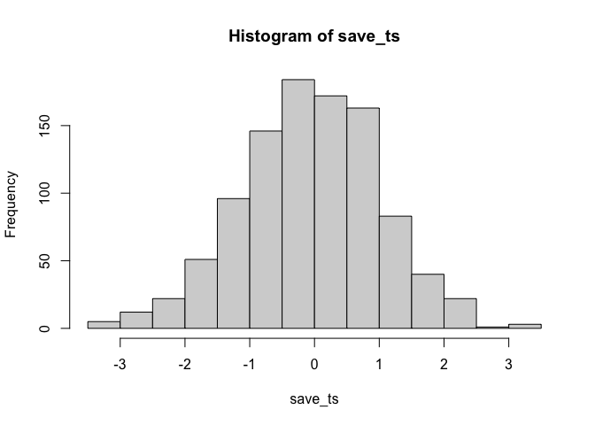
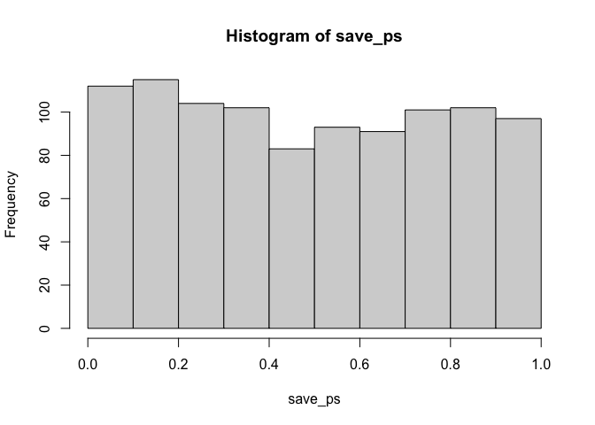
Neat. We see both a \(t\) distribution, that looks like \(t\) distribution as it should. And we see the \(p\) distribution. This shows us how often we get \(t\) values of particular sizes. You may find it interesting that the \(p\)-distribution is flat under the null, which we are simulating here. This means that you have the same chances of a getting a \(t\) with a p-value between 0 and 0.05, as you would for getting a \(t\) with a p-value between .90 and .95. Those ranges are both ranges of 5%, so there are an equal amount of \(t\) values in them by definition.
Here’s another way to do the same simulation in R, using the replicate function, instead a for loop:
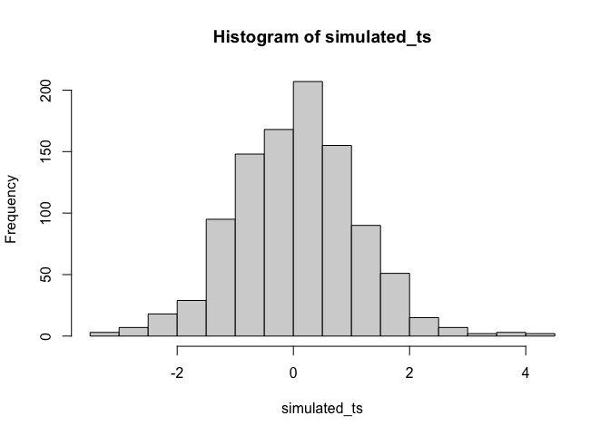
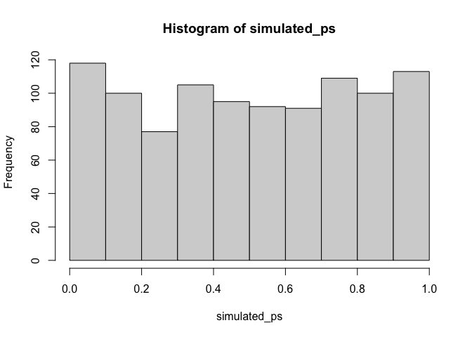
7.7.2 Simulating a paired samples t-test
The code below is set up to sample 10 scores for condition A and B from the same normal distribution. The simulation is conducted 1000 times, and the \(t\)s and \(p\)s are saved and plotted for each.
save_ps <- length(1000)
save_ts <- length(1000)
for ( i in 1:1000 ){
condition_A <- rnorm(10,10,5)
condition_B <- rnorm(10,10,5)
differences <- condition_A - condition_B
t_test <- t.test(differences, mu=0)
save_ps[i] <- t_test$p.value
save_ts[i] <- t_test$statistic
}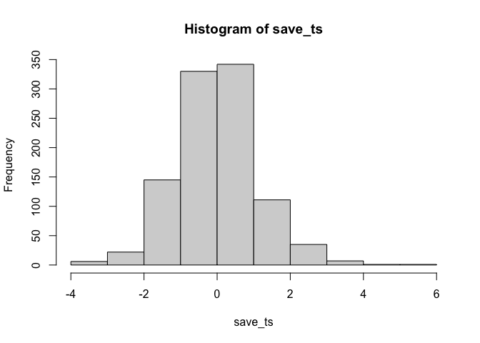
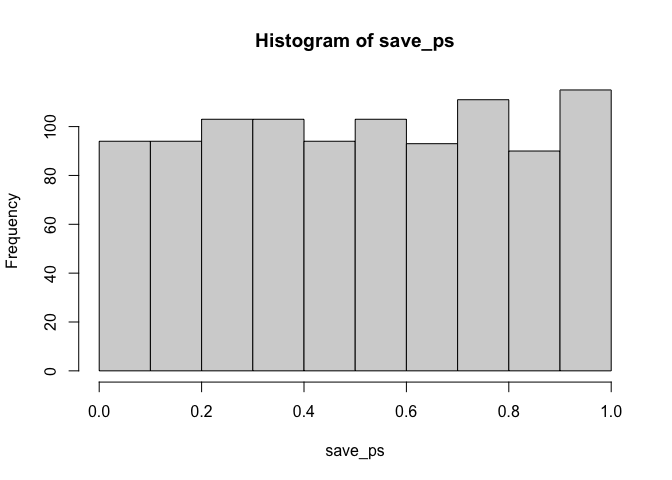
According to the simulation. When there are no differences between the conditions, and the samples are being pulled from the very same distribution, you get these two distributions for \(t\) and \(p\). These again show how the null distribution of no differences behaves.
For any of these simulations, if you rejected the null-hypothesis (that your difference was only due to chance), you would be making a type I error. If you set your alpha criteria to \(\alpha = .05\), we can ask how many type I errors were made in these 1000 simulations. The answer is:
length(save_ps[save_ps<.05])
#> [1] 48
length(save_ps[save_ps<.05])/1000
#> [1] 0.048We happened to make 48. The expectation over the long run is 5% type I error rates (if your alpha is .05).
What happens if there actually is a difference in the simulated data, let’s set one condition to have a larger mean than the other:
save_ps <- length(1000)
save_ts <- length(1000)
for ( i in 1:1000 ){
condition_A <- rnorm(10,10,5)
condition_B <- rnorm(10,13,5)
differences <- condition_A - condition_B
t_test <- t.test(differences, mu=0)
save_ps[i] <- t_test$p.value
save_ts[i] <- t_test$statistic
}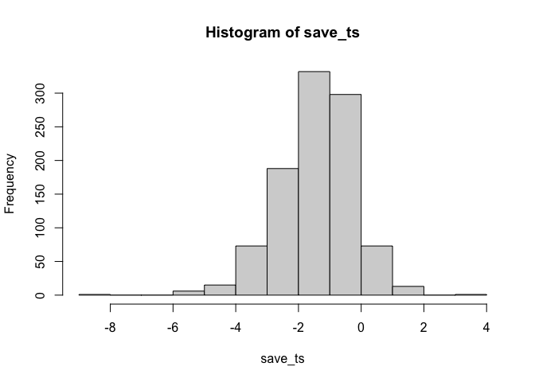
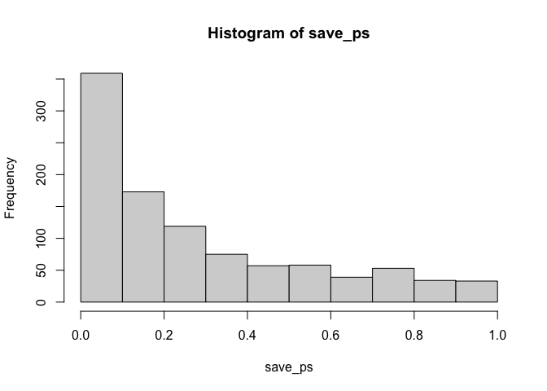
Now you can see that the \(p\)-value distribution is skewed to the left. This is because when there is a true effect, you will get p-values that are less than .05 more often. Or, rather, you get larger \(t\) values than you normally would if there were no differences.
In this case, we wouldn’t be making a type I error if we rejected the null when p was smaller than .05. How many times would we do that out of our 1000 experiments?
length(save_ps[save_ps<.05])
#> [1] 244
length(save_ps[save_ps<.05])/1000
#> [1] 0.244We happened to get 244 simulations where p was less than .05, that’s only 0.244 experiments. If you were the researcher, would you want to run an experiment that would be successful only 0.244 of the time? I wouldn’t. I would run a better experiment.
How would you run a better simulated experiment? Well, you could increase \(n\), the number of subjects in the experiment. Let’s increase \(n\) from 10 to 100, and see what happens to the number of “significant” simulated experiments.
save_ps <- length(1000)
save_ts <- length(1000)
for ( i in 1:1000 ){
condition_A <- rnorm(100,10,5)
condition_B <- rnorm(100,13,5)
differences <- condition_A - condition_B
t_test <- t.test(differences, mu=0)
save_ps[i] <- t_test$p.value
save_ts[i] <- t_test$statistic
}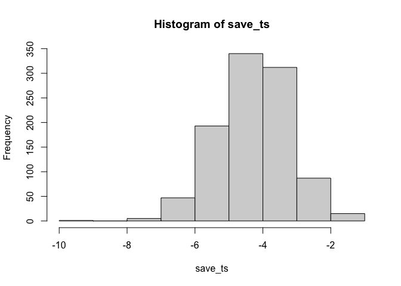
#> [1] 984
#> [1] 0.984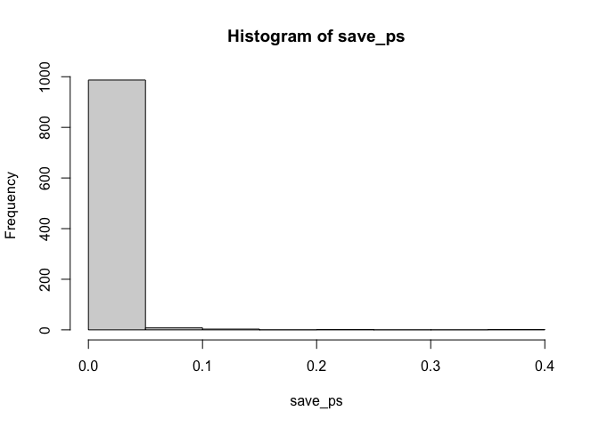
Cool, now almost all of the experiments show a \(p\)-value of less than .05 (using a two-tailed test, that’s the default in R). See, you could use this simulation process to determine how many subjects you need to reliably find your effect.
7.7.3 Simulating an independent samples t.test
Just change the t.test function like so… this is for the null, assuming no difference between groups.
save_ps <- length(1000)
save_ts <- length(1000)
for ( i in 1:1000 ){
group_A <- rnorm(10,10,5)
group_B <- rnorm(10,10,5)
t_test <- t.test(group_A, group_B, paired=FALSE, var.equal=TRUE)
save_ps[i] <- t_test$p.value
save_ts[i] <- t_test$statistic
}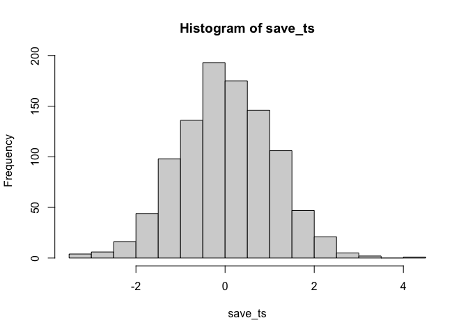
#> [1] 45
#> [1] 0.045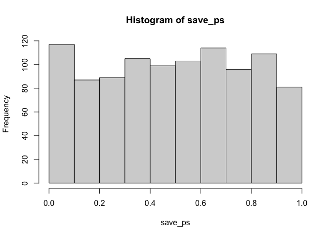